We work in the dark to serve the light。
本文将分享本人在学习yara时的一些心得，并在后面给出使用yara来防御CobaltStrike的方法。
yara简介
yara是一个基于规则的恶意样本分析工具，旨在帮助蓝队或安全研究员防御和分析恶意软件，其官网地址为https://virustotal.github.io/yara/。你可以使用yara基于文本或二进制来标记恶意软件家族来达到各种目的。
yara的安装也是十分的简单，如win下已有独立文件，下载使用即可。
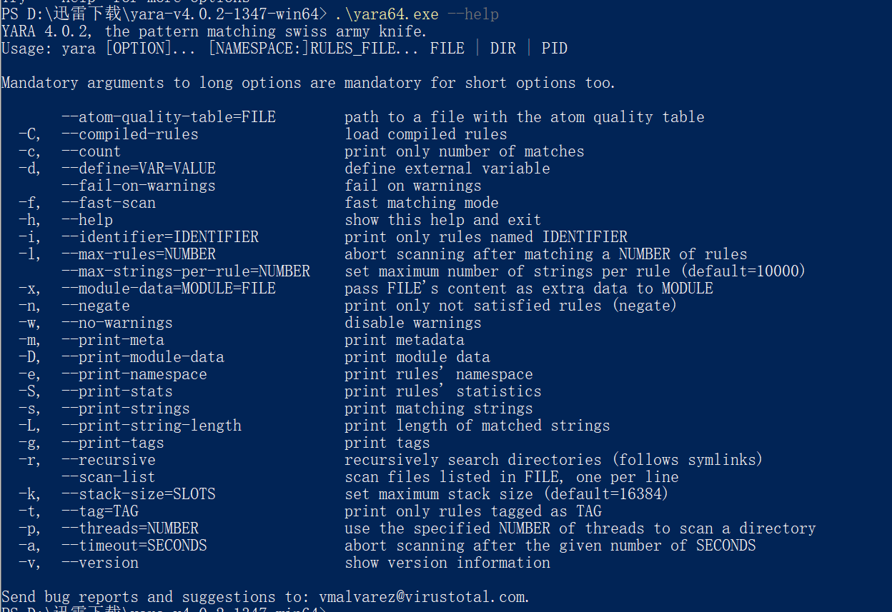
下面是一个简单的yara规则的demo：
1 | rule silent_banker : banker |
yara规则不需要太多知识要求，规则本身十分简单, 真正的技巧和细节都在分析部分
yara规则
yara的规则跟许多语言的语法颇为类似，学习起来也没有那么的困难。下面就是一个基础的yara规则框架：
1 | rule RuleName |
然后将其保存为yara文件即可。当然该规则没有进行任何操作。一般一个yara文件分为上述的三个部分，meta、strings、condition，并以rule包裹。rule后跟rule名字。关于rule名字有以下要求：
- 英文或字母组成的字符串
- 可以使用下划线
- 第一个字符禁止为数字
- 大小写敏感
- 不可以大于128个字符长度
- meta部分：主要为该规则的基础信息，如作者信息、创建时间、样本内容等
- strings部分：主要用来定义字符串支持正则表达式，用来配合下面的部分使得规则生效。
- condition部分：主要来编写表达式来处理strings部分的字符串。
yara关键词
在yara中有一些词不可作为标识符，因为在yara中有特殊用途。
all、and、or、at、int32、wide、not….
具体的可以去查找yara文档，这里不再赘述。
字符串
在yara中字符串的表示主要由十六进制与文本字符串组成。
十六进制字符串：
在十六进制字符串中可以使用通配符表示，通配符为“?”.demo如下：
1 | rule RuleName |
则它可以匹配以下字符串：
EF 44 01 D8 AA FB
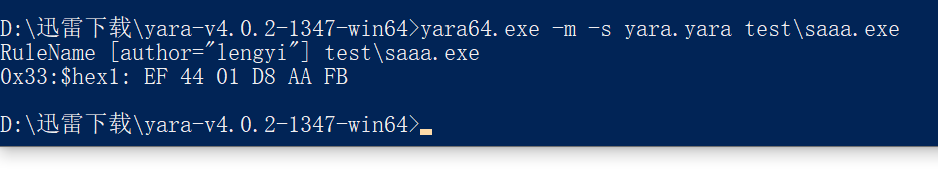
不定长字符串可以用[4-6]这类形式表示，而无限长的字符串可以用[-]表示
1 | rule RuleName |
文本字符串：
这个就没啥好说的了，利用文本来匹配字符串，比如mimikatz的logonpasswords等
1 | rule RuleName |
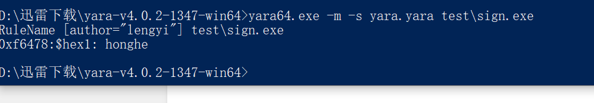
注：转义字符依旧适用。
修饰符
yara提供了丰富的修饰符来方便匹配，如不区分大小写的nocase：
1 | rule RuleName |
宽字符的wide：
1 | rule RuleName |
匹配base64的base64：
1 | rule RuleName |
它将会匹配下面的字符串：
aG9uZ2hl
全词匹配的fullword：
1 | rule RuleName |
将匹配:
1 | www.facebook.com |
正则表达式
这个就不再多说了，唯一要注意的就是使用//来包裹正则表达式，类似于perl语法。
条件
布尔运算
使用and or not等关键字来使字符串充当布尔变量
1 | rule RuleName |
文件大小
yara使用filesize来进行文件大小的匹配，大小以字节为单位
1 | rule RuleName |
可执行程序入口点
假如你扫描的文件是一个pe文件或者是一个elf文件时，你可以使用entry_point来进行表示程序的入口点。新版本中已将它归入了PE模块当中，不再单独使用。
访问指定位置的数据
如果你想从特定偏移位置读取数据, 并将其存为一个变量. 那么你可以使用以下任何一个方式:
1 | int8(<offset or virtual address>) |
1 | rule RuleName |
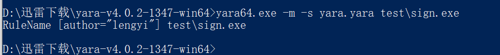
以上就是基本的yara规则的语法了，而在正式的编写中呢，可能并不需要这么负责的内容，比如我们以某rat的规则为例：
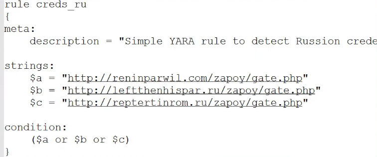
就是简单的三条url地址，然后使用or进行匹配，而这些url地址也可以使用pestudio来查看：
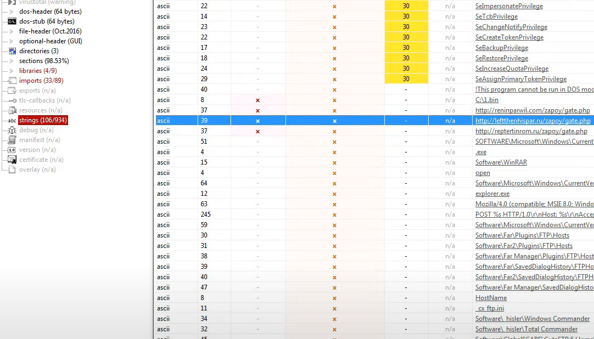
并不需要太多的逆向知识，除此之外vt也有相关的功能：
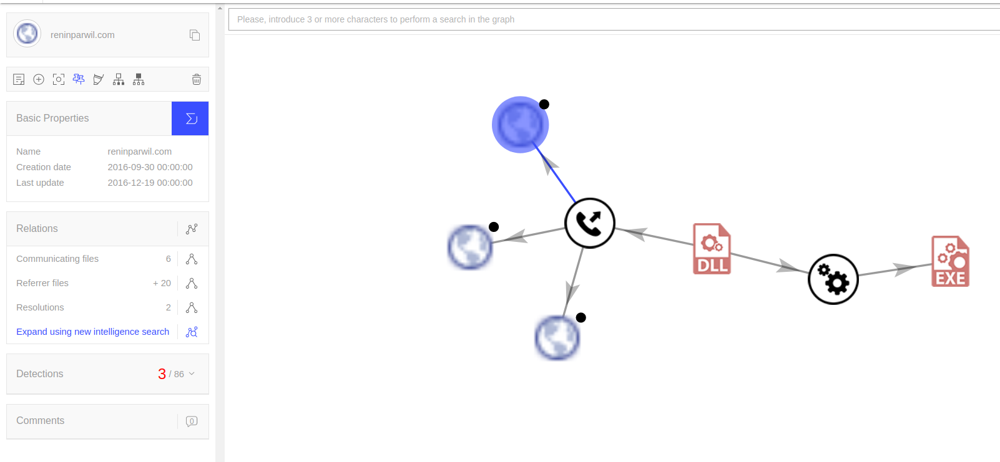
唯一的难点就是需要大量的样本来确定，该家族的样本都是使用的该url。
更简单的可能就像下面这样
1 | rule hacktool_windows_mimikatz_copywrite |
但对于mimikatz来说，的确简单有效
yara编写
我们以CobaltStrike为例，从分析开始一步步的编写一个yara规则出来。
首先就是文件大小，CobaltStrike生成的马一般都很小，所以我们第一条规则便可以针对马的大小来做限制：
1 | rule CobaltStrike4_1:beacon |
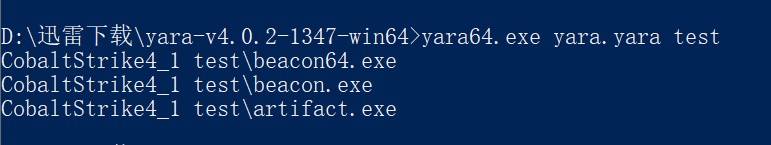
然后便是分析阶段，将cs的马子放入cutter进行分析，发现入口点基本一样：
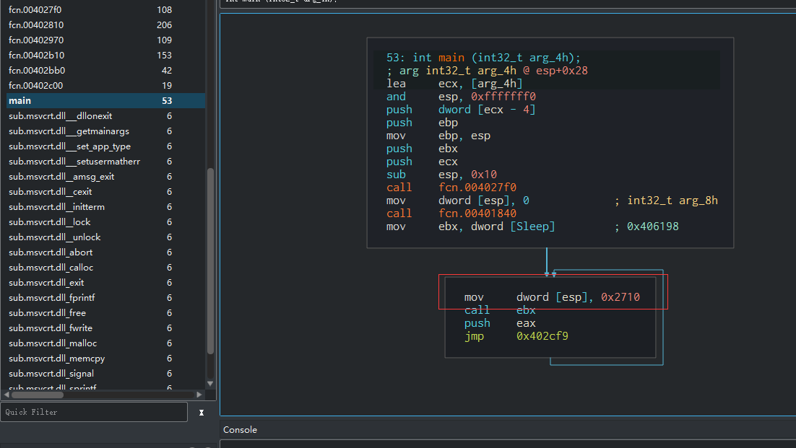
将其转换为汇编代码，发现入口点的main的结构相同
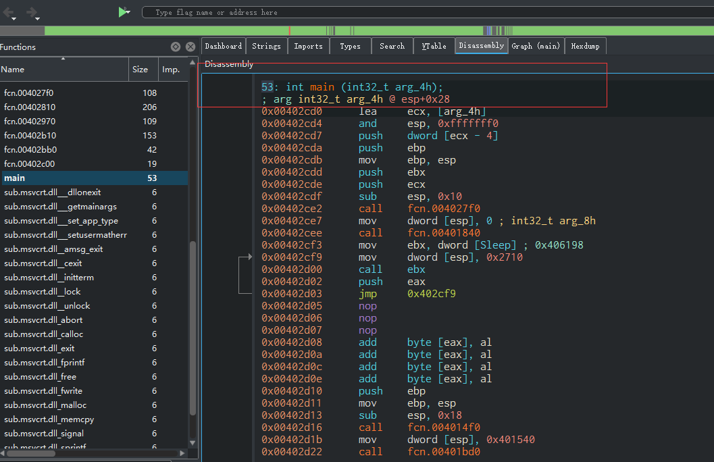
继续跟进，发现入口点为0x004014b0 ，然后减去0xc，那么入口点基本就是14B0的位置：
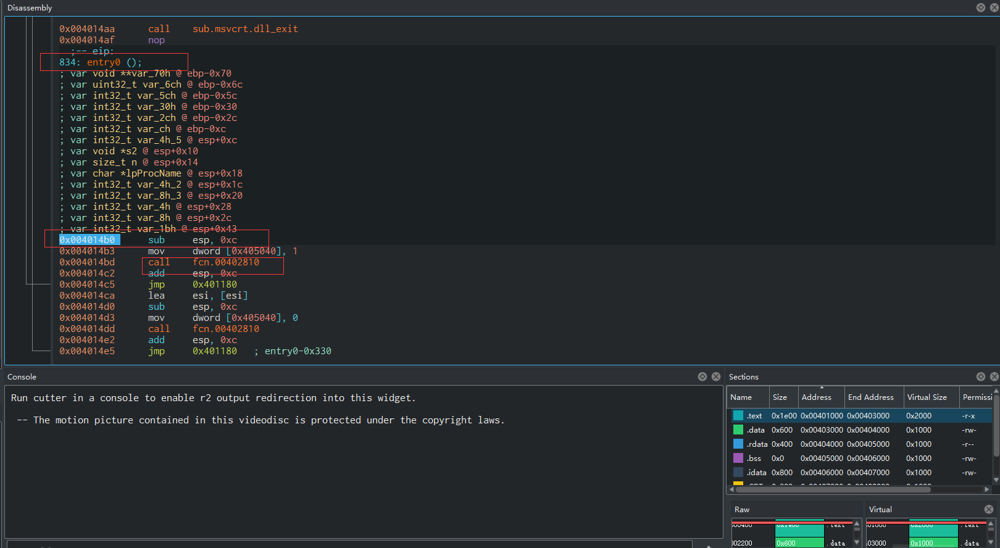
在这里也可以印证我们的猜想
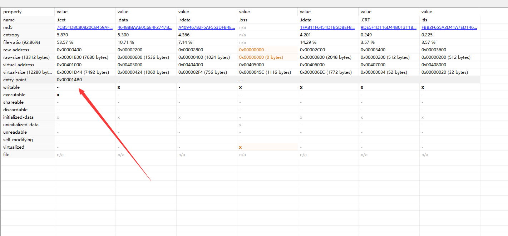
之前说过可以使用pe模块来标识文件的入口点，不过不是使用我们这里的地址，而是需要文件偏移：
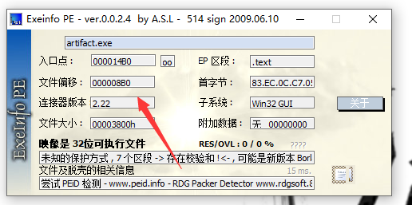
即000008B0也就是0x8b0
1 | import "pe" |
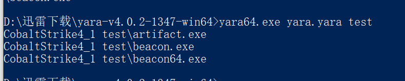
那么这样简单的规则就算写完了，我们继续编写，在查看PE的过程中，我发现其中有一些奇奇怪怪的字符串：
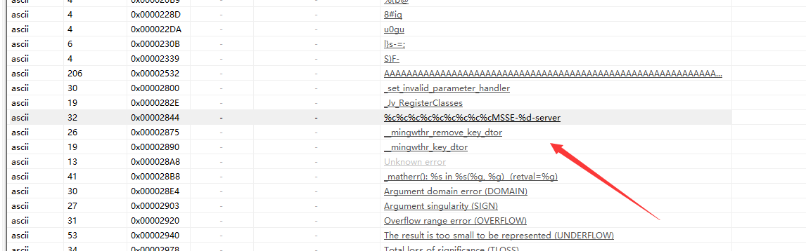
看起来像是一些通信协议，我们回到cutter，查看main函数;
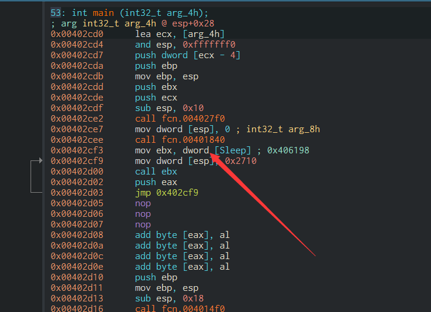
跳到401840，在该地址中可以看到我们的字符串，以及使用CreateThread来新建线程
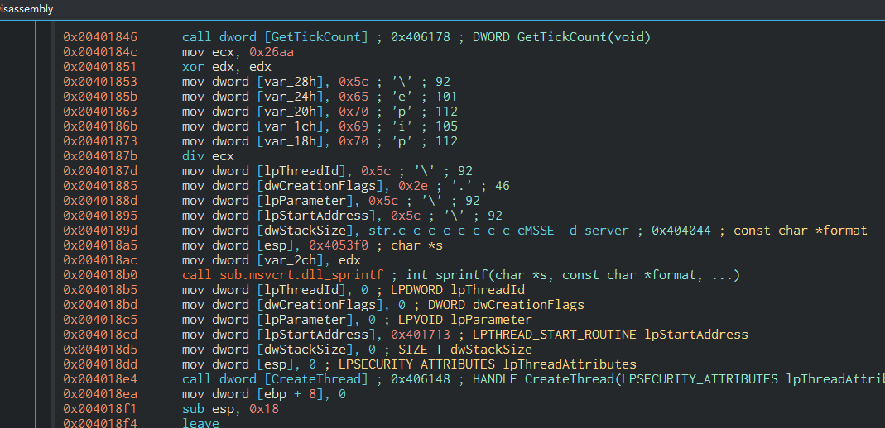
这里CreateThread的地址为406148，在401648中可以看到正在使用CreateNamedPipeA进行管道通信：
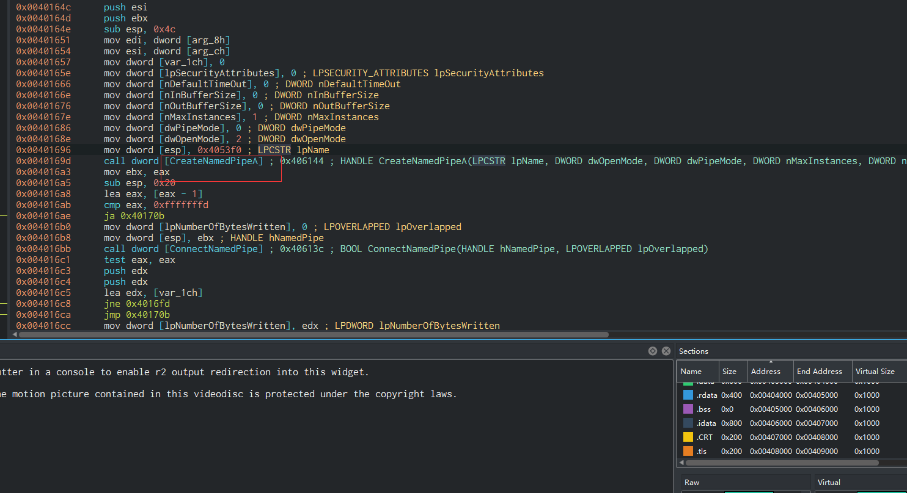
通过附加多个线程，发现均存在该字符串，则在规则中匹配即可：
1 | import "pe" |
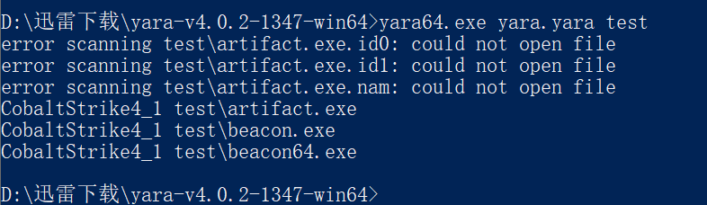
最后使用uint16来判断一下是否为pe文件即可，最后的yara规则如下：
1 | import "pe" |
然后在一些威胁情报网站随便下了几个样本，三个检出了两个：
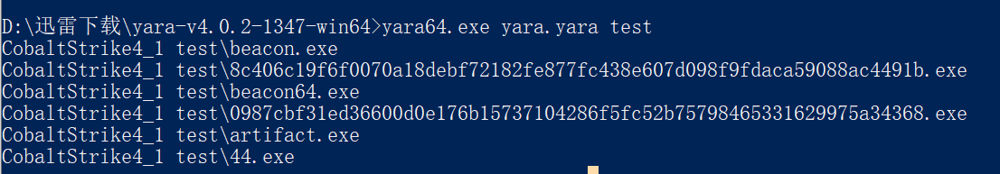
还是很不错的。
参考文章：
https://yara.readthedocs.io/en/stable/writingrules.html#more-about-rules
https://www.youtube.com/watch?v=35Exd9GrR5I&ab_channel=HackerSploit
https://www.anquanke.com/post/id/211501#h3-8